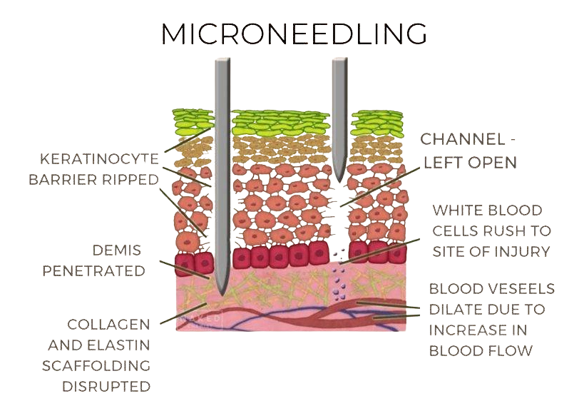

Rejuvenate your skin naturally with eDermaStamp Microneedling technology
eDermaStamp Microneedling is an advanced skin rejuvenation treatment designed to improve skin texture, tone, and elasticity.
It targets fine lines, wrinkles, acne scars, enlarged pores, hyperpigmentation, and overall dullness, helping the skin look firmer, smoother, and more youthful.
Why not restore your skin the natural way?
eDermaStamp Microneedling is safe, effective, and suitable for all skin types.
It is virtually pain free, minimally invasive, and requires little to no downtime, making it an ideal option for anyone with a busy lifestyle.
The treatment also enhances the absorption of nourishing serums, ensuring faster, longer-lasting results.
We offer this procedure for the face, neck, and body to give you healthy, radiant skin.
Areas of Treatment
Anti-Aging, Scarring, & Stretch Marks
Hyperpigmentation
Scalp & Hair

How Does Microneedling Work?
Using German-engineered precision microneedles, the eDermaStamp creates controlled micro-channels in the skin.
These micro-injuries stimulate the body's natural healing response, triggering the production of fresh collagen and elastin.
This process renews the skin from within, improving its firmness, texture, and overall appearance.
The controlled micro-injuries also enhance the absorption of active serums applied during treatment, allowing them to penetrate deeper and work more effectively.
As the skin heals, it becomes smoother, plumper, and more radiant.
Results develop gradually, with continued improvement over the weeks that follow.
Microneedling is safe, effective, and suitable for all skin types.
It involves minimal discomfort and very little downtime, making it a convenient option for addressing fine lines, scars, stretch marks, and uneven skin tone.
With each treatment, you'll notice healthier, rejuvenated skin that looks naturally refreshed.
FAQs
-
We recommend 3-6 treatments.
-
There is minimal recovery time as well with this treatment, social downtime is the first 2-3 days. We recommend coming in for a treatment on a Friday eve and then taking the weekend off.
-
Most people require 3 to 6 microneedling sessions, typically spaced 4 to 6 weeks apart, to achieve optimal results for collagen induction, acne scars, and skin rejuvenation. While improvements are visible after one session, a series is necessary for long-term, significant skin texture and tone improvements.
-
You will want to have extremely gentle cleanser and moisturizer on hand for the first 3 days. A homecare plan will be provided.